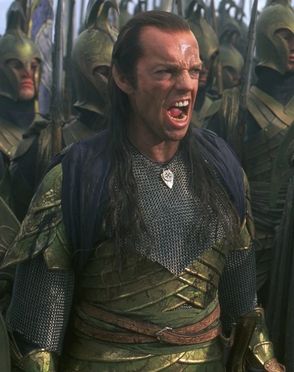
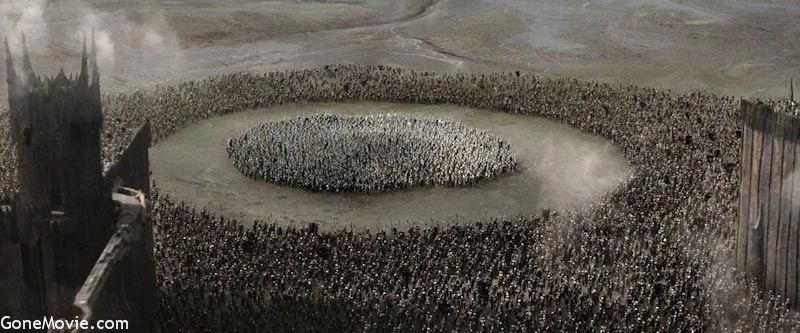

The war of the last Alliance:
The War of the Last Alliance was fought by the Last Alliance of Elves and Men against the Dark Lord Sauron in response to his threat of conquest. It lasted for twelve years and had four distinct stages.
The conjoined army of Elves under Gil-galad, High King of the Ñoldor, King Oropher of the Woodland Realm and King Amdír of Lothlórien joined with Elendil's host from Arnor and Gondor to create the most significant force assembled in Middle-earth since the landing of Ar-Pharazôn. The Last Alliance was the largest military union of the Free Peoples of the world, and the only large-scale war fought until the climax of the War of the Ring an age later. After this war, the Elves of Middle-earth could never muster a force of this strength again.
The battle of the five Armies:

The Battle of Five Armies was a battle waged between the Orcs and the Wargs of the Misty Mountains and the Grey Mountains against the Lake-men, Elves, Dwarves, on and near the Lonely Mountain.
After Bard killed the dragon Smaug, the Men of the Lake and the Wood-elves both laid siege to the Dwarves in the Lonely Mountain, the thirteen Dwarves of the Lonely Mountain under Thorin II Oakenshield having refused to share any of the treasure that they had recaptured from Smaug.
The battle of Helm's Deep:

The Battle of the Hornburg, known in various adaptations as the Battle of Helm's Deep, was the first large-scale battle of the War of the Ring, where the Rohirrim under King Théoden defended the Hornburg from Saruman's army of Dunlendings and Uruk-hai.
The Siege of Gondor:

The Siege of Minas Tirith, also known as the Siege of Gondor, occurred in the year TA 3019 when Sauron's army besieged the city of Minas Tirith during the Great War of the Ring. The siege, though nearly successful, was broken by the arrival of Théoden and the Battle of the Pelennor Fields.
The Battle of the Pelennor Fields was a battle for the city of Minas Tirith and ultimately Gondor, immediately following a large-scale siege of Minas Tirith by Sauron's army. It was the greatest battle of the Great War of the Ring and indeed the largest of the entire Third Age. Major casualties resulted, including the deaths of King Théoden and the Witch-king of Angmar.
The battle of the Morannon:
The Battle of the Black Gate or Battle of the Morannon was the final major battle of the War of the Ring, fought before Mordor's Black Gate. It resulted in the ultimate defeat of Sauron not by victory on the battlefield, but by means of the destruction of the One Ring by the Hobbit Frodo Baggins.